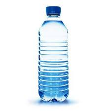
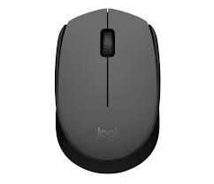
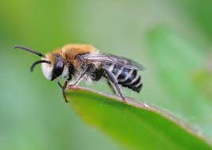

Test Image -

Output on Google Lens: Mineral Water
Output on Mobile Net: Water Bottle
Result - Draw
Google lens is slightly more accurate, but its a draw.
Test Image -

Output on Google Lens: Desktop Computer
Output on Mobile Net: Computer Desktop
Result - Draw
They both send the same response!
Test Image -

Output on Google Lens: Wireless Mouse
Output on Mobile Net: Computer Mouse
Result - Draw
Mobile net is specifying it more slightly, but draw
Test Image -
Output on Google Lens: Cactus(Echinopisis oxygona)
Output on Mobile Net: Shower Curtain
Result - Google Lens wins 1-0
It's kind of obvious who wins this one.
Test Image -

Output on Google Lens: Honey Bee
Output on Mobile Net: Cornet
Result - Google Lens wins 2-0
It's kind of obvious who wins this one too.